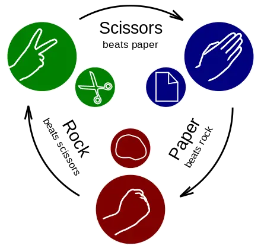

About the game
Rock paper scissors is an intransitive hand game, usually played between two people, in which each player simultaneously forms one of three shapes with an outstretched hand. These shapes are "rock" (a closed fist), "paper" (a flat hand), and "scissors" (a fist with the index finger and middle finger extended, forming a V). The earliest form of "rock paper scissors"-style game originated in China and was subsequently imported into Japan, where it reached its modern standardized form, before being spread throughout the world in the early 20th century.
A simultaneous, zero-sum game, it has three possible outcomes: a draw, a win, or a loss. A player who decides to play rock will beat another player who chooses scissors ("rock crushes scissors" or "breaks scissors" or sometimes "blunts scissors"), but will lose to one who has played paper ("paper covers rock"); a play of paper will lose to a play of scissors ("scissors cuts paper"). If both players choose the same shape, the game is tied and is usually replayed to break the tie.
Rock paper scissors is often used as a fair choosing method between two people, similar to coin flipping, drawing straws, or throwing dice in order to settle a dispute or make an unbiased group decision. Unlike truly random selection methods, however, rock paper scissors can be played with some degree of skill by recognizing and exploiting non-random behavior in opponents.
Rules of the game
The players may start by counting to three aloud, or by speaking the name of the game (e.g. "Rock! Paper! Scissors!"), raising one hand in a fist and swinging it down with each syllable onto their other hand (or in a less common variant, holding it behind their back). They then "throw" or "shoot" by extending their selected sign towards their opponent on what would have been the fourth count, often saying the word "shoot" while doing so.
Variations include a version where players throw immediately on the third count (thus throwing on the count of "Scissors!"), a version including five counts rather than four ("Rock! Paper! Scissors! Says! Shoot!", almost exclusively localized in the United States to Long Island and some parts of New York City), and a version where players shake their hands three times before "throwing".